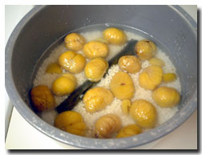

| ..*..*.. 2003年11月12日(水) 晴れ ..*..*.. 栗は、毎年1回くらいは買うのですが、日本系のお店で買うと傷んでいる栗の量がけっこうあります。が、先日、会社の近くの中国系のお店で、おいしそうな栗を見つけました。約50粒中、傷んでいたのは2個。やっぱり、栗はこうでなくてはね。 今日は栗ごはんを作り方を載せてみます。栗は、包丁で皮を剥くのがたいへんですよね。昔、何かで読んだ雑誌で簡単な栗の皮の剥き方が載っていました。試してみると、ほんとにするする剥けました。ので、その方法も載せておきますね。 包丁を使わない栗の皮のむき方--♪ 1. 薄皮を切らないように、栗に切り込みを入れる 2. 一晩、水につける 3. 栗が水をかぶるくらいの量に水を減らして、レンジで6-7分加熱する 4. 水を流し入れ、手で触れるくらいの熱さまで冷ます（できるだけ熱めがいい） 5. 切り込みから破くように皮をむく (最初は薄皮を残すようにとってから、一気に薄皮をむくと、形がくずれなくていい)  栗ごはんの作り方--♪ 栗(20-30粒) もち米(1カップ) 白米(２カップ) 塩(小さじ１) 酒 (大さじ3) 昆布(5cm x 10cm--１枚) 1. 栗(20-30粒)の皮を剥いておく 2. もち米(1カップ)と白米(２カップ)を洗って、炊飯器に入れる 3. 塩(小さじ１)と酒 (大さじ3) を入れ、普段の3合のご飯を炊くときと同じ量の水を注ぐ 4. 写真のように昆布(2cm x 10cm--１枚)を入れ、1の栗(20-30粒)をのせて普通に炊く 5. 出来上がり♪ とまぁ、簡単なのですけど、いくつか試してみて、これが一番美味しかったような気がします。盛り付ける時に、栗が上にくるようにしてね。 |